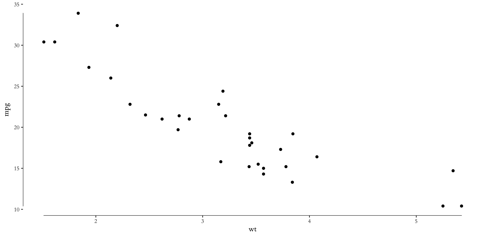

Posted on 2017-10-05 · 3 min read · Programming · R · Seventeen
Contents
I love making plots in R with ggplot. However, there are always a few niggles that I forget about between plots. I wrote this post so that I have somewhere to look the next time I need to tweak a few things in my plots. I intend to come back and add updates in the future as I learn more things. If I keep coming back, I might also remember a few of these too.
Axis labels
I’m always getting caught out by labels. How the heck do I change such and such to a larger font and so on? For most things the theme() function comes to my rescue. It’s just a matter of remembering all the elements that can be altered. There are so many that there’s no shame in forgetting a few. Thankfully the documentation for ggplot is great and it’s easy to find the relevant setting. It’s worth bearing in mind that there are additional helper functions that do things in ggplot. For example, in the code:
ggplot(DF, aes(x=my_bars))
+ geom_bar()
+ theme_minimal()
+ xlab("My x axis")
+ ylab("My y axis")
+ theme(
axis.text = element_text(size = 16),
axis.title = element_text(size = 16))
axis.text refers to the axis labels and axis.title to the axis titles. The element_text() tells ggplot to alter the text. Here we set the size to 16pt but you can also alter the font, the weight, the colour and so on. Another such helper function is element_rect() to which you can pass properties you want for the background rectangle. See further down this post for an example.
One more source of help is cookbook-r.com, which has lots of practical advice, particularly for all those fiddly legend alterations and custom colourings.
Look and feel.
Quite a few themes have popped up in recent years as ggplot has become almost the default form of R graphics. It’s not essential but I thought I’d share a few of my favourites. From the themes that come with vanilla ggplot/tidyverse, my favourite is theme_minimal() even if it is a little dour.
Because of this blog’s current theme I am often using the ggthemes package, in particular theme_tufte() to match with my jekyll theme. However, I do need to use one of a couple of tricks if I want to use the figures on this blog. One way is to alter the colour of the background to match this site. The other is a transparency trick that I’ll point out later on.
This week I also came across the hrbrthemes package, which also has a neat style using Google’s ubiquitous Roboto Sans font. As an added bonus the package also includes a spellchecker that makes sure you’ve spelt your titles and labels correctly. Check out the examples, they look pretty smart.
Other fun theme packages worth investigating include gg_sci (themes based on science journals and science fiction shows) and gg_tech (themes based on tech companies such as Airbnb). The latter package’s Twitter theme fits well with the colour scheme of the council’s official slide deck so I might use it at work in future.
Exporting transparent graphics.
I think that exporting graphs with coloured backgrounds to match this website is a reasonable workaround but the best approach is to export png files with transparent backgrounds. A quick search of stackoverflow brings up the following commands:
p <- p +
theme(
# bg of the panel
rect = element_rect(fill = "transparent")
)
p
ggsave(p, filename = "tr_tst2.png", bg = "transparent")
where p is a previously created ggplot. This approach sees the theme() function ride to the rescue again.
